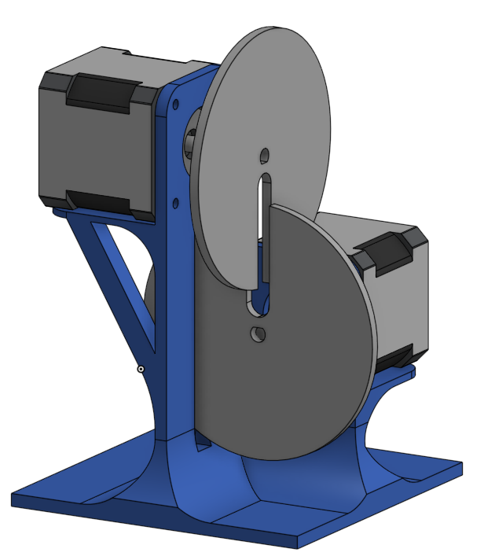
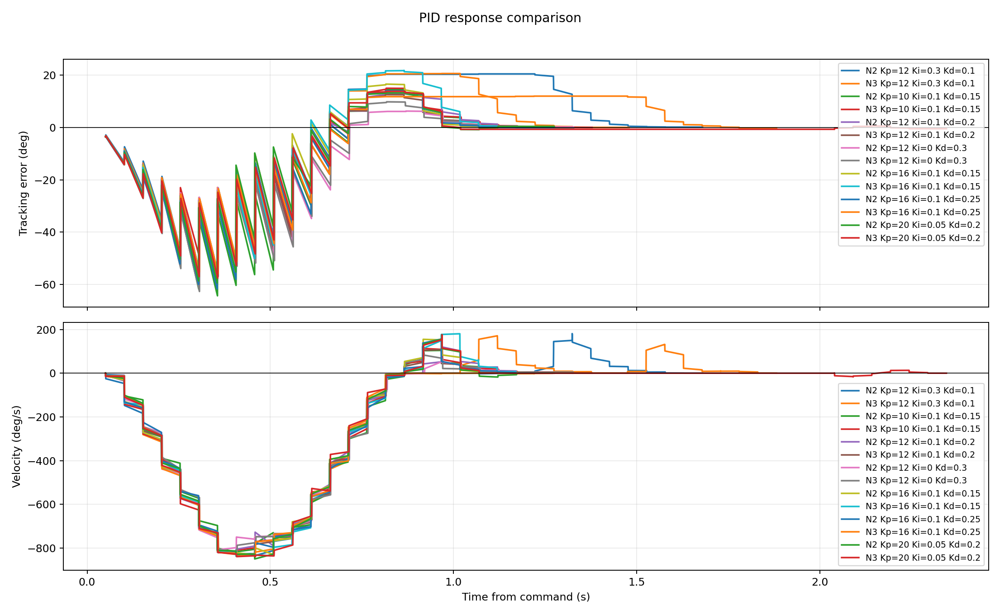
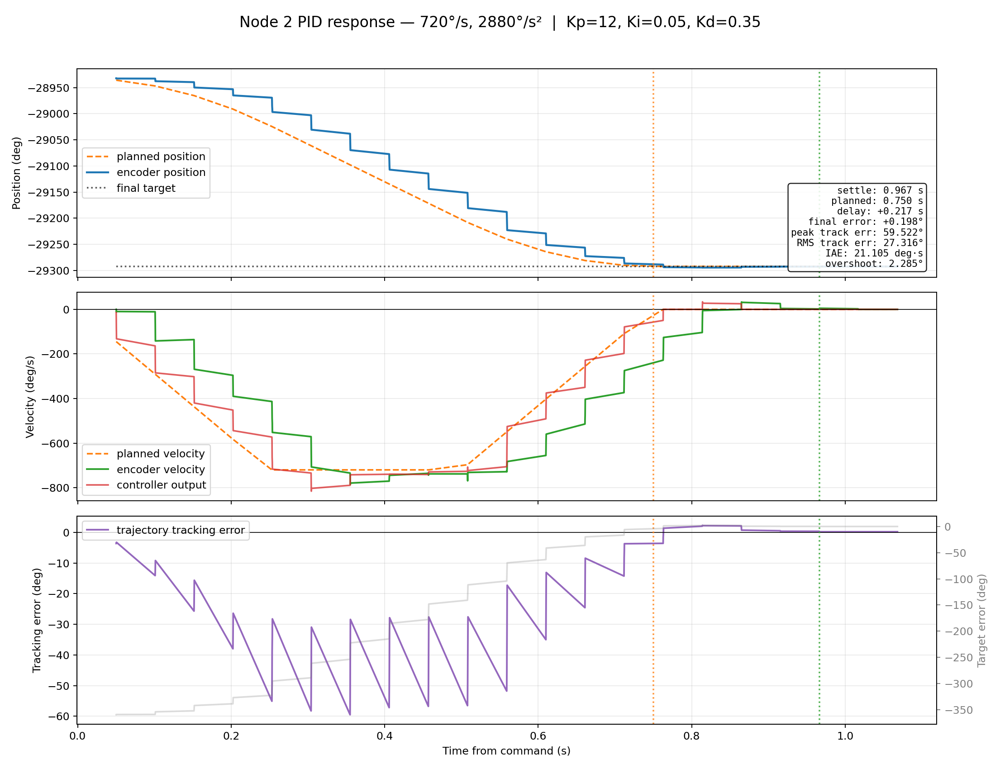
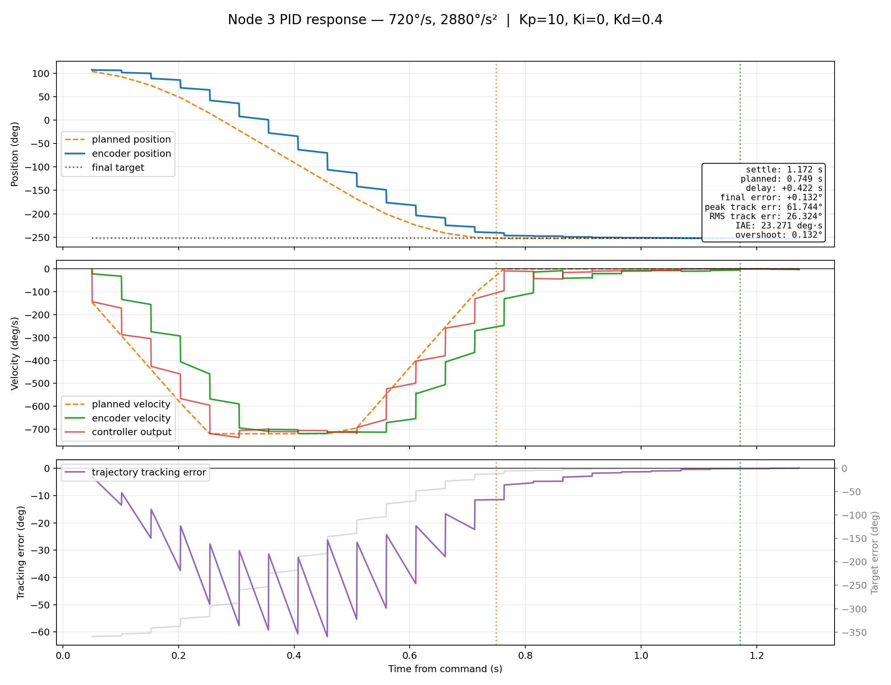
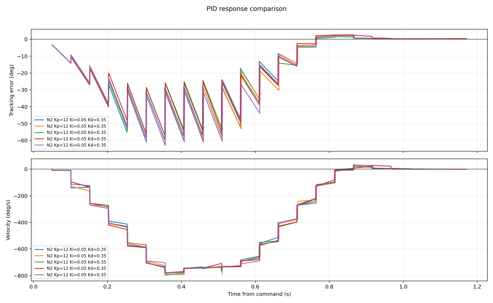
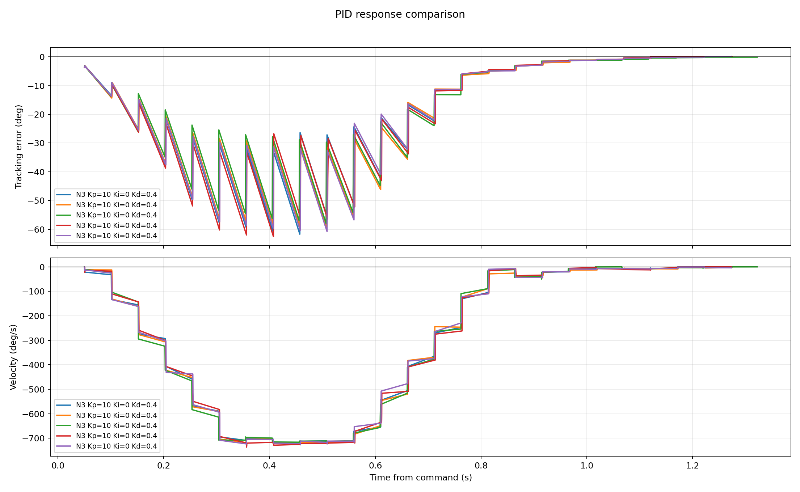
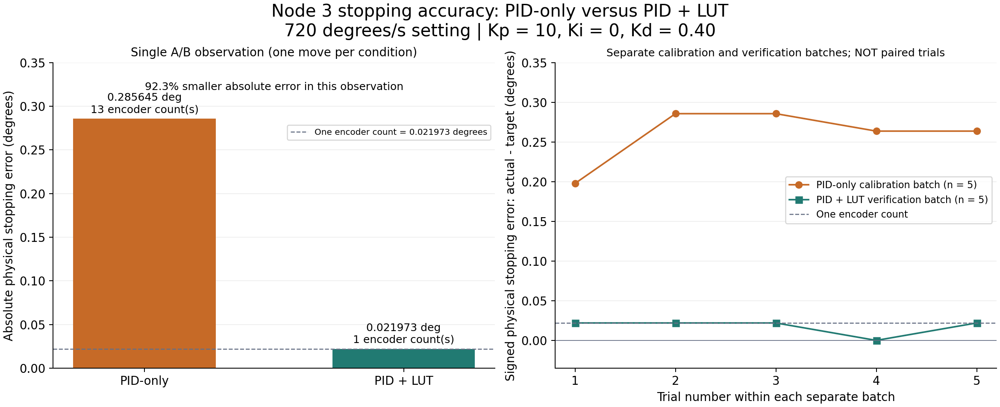

1. APPLICATION OVERVIEW
This application demonstrates coordinated precision motion using two encoder-equipped stepper motors on a shared CAN network. Each motor carries a disc with a radial gap. The discs are mounted on perpendicular axes with offset centres: node 2 is the lower motor and node 3 is the elevated motor.
The operating sequence is simple: node 2 completes one revolution and aligns its gap with the taught starting position; node 3 then completes one revolution and returns to its own starting position. The sequence repeats, with the stationary disc providing clearance for the moving disc. One alternating cycle therefore means two moves, one revolution per motor.
The implementation combines firmware PID feedback with a Python lookup table (LUT) that compensates repeatable stopping bias. Node 2 also uses a bounded fine-positioning stage before the other motor is released. This is PID + LUT control, not LUT-only control.

2. HARDWARE AND CONTROL ARCHITECTURE
The rig uses a 24 V supply, two stepper motors with encoders and CAN-connected driver boards, and a laptop connected to one board through USB. Commands are addressed to node 2 or node 3; the shared CAN connection carries node-specific control and feedback traffic.
The motor configuration uses 200 full steps per revolution. Encoder calculations use 16,384 counts per revolution. Disc diameter, thickness, slot width and clearance have not been numerically established here, so no mechanical clearance dimensions or collision margin are claimed.
Control responsibilities are divided as follows:
| Layer | Responsibility |
|---|---|
| Python sequence controller | Select the node, speed/profile and LUT offset; command each turn; verify alignment before handoff |
| Driver firmware | Generate motor motion and apply closed-loop encoder feedback using the configured PID gains |
| Encoder feedback | Measure shaft position and compare it with the taught gap-alignment phase |
| Stationary-disc guard | Block the next move unless the other motor is enabled, stationary and within its accepted reference window |
Signal path:
Taught physical reference
-> one-revolution physical target
-> Python LUT-adjusted command
-> USB-connected board / CAN network
-> addressed driver's motion planner and PID loop
-> stepper motor and encoder
-> endpoint verification / bounded fine correction
-> permission for the other node to rotate
The LUT is stored in Python, not written into the driver firmware. The motion experiment changes runtime settings and restores them at exit; it does not save a new persistent firmware configuration or redefine encoder zero.
3. STEP 1: TEACH AND RECOVER THE PHYSICAL ALIGNMENT
Both discs are first manually placed in the intended clearance position. Their raw encoder phases are recorded as the physical references. Returning to these phases is more meaningful than declaring whatever position happens to be present at startup to be zero.
An encoder phase wraps after one revolution. The shortest signed correction is therefore calculated with modular arithmetic:
N = 16384 counts/revolution q = 360 / N = 0.02197265625 degrees/count delta_counts = ((R - (C mod N) + N/2) mod N) - N/2 correction_deg = delta_counts * q slot_error_deg = -delta_counts * q
R is the taught raw reference and C is the current encoder count. Positive slot error means actual position is above the physical reference. The aligned absolute base is B = (C + delta_counts) * q.
Startup recovery is deliberately bounded. The calibration and higher-speed runner allow only a small automatic correction window of 2.5 degrees. The stationary guard is established before correcting the other disc. A larger discrepancy stops the sequence for inspection instead of attempting unrestricted homing through interlocking discs.
The tested direction convention is clockwise for negative angular targets, viewed from the shaft/disc side. This convention must be checked again if wiring, direction settings or the observation viewpoint changes.
4. STEP 2: ESTABLISH AND ASSESS PID CONTROL
PID feedback reacts to the difference between the planned position and encoder position. A representative description of the controller is:
e_tracking(t) = r(t) - theta(t)
v_control(t) = v_feedforward(t)
+ Kp * e_tracking(t)
+ Ki * integral(e_tracking(t) dt)
- Kd * v_measured(t)
r(t) is planned position and theta(t) is measured position. Kp supplies proportional correction, Ki addresses accumulated error, and Kd provides damping. This equation explains the control structure; it is not a claim that every internal detail of the installed firmware has been reconstructed. With Ki = 0, the active feedback is the PD special case of the configurable PID controller.
PID gains were compared using recorded position-versus-time, velocity-versus-time and error-versus-time plots. The useful settings differed between motors, so a single shared gain set was not imposed.
| PID tuning stage | Node | Kp | Ki | Kd | Observed overshoot (degrees) | Observed settling time (s) |
|---|---|---|---|---|---|---|
| Initial setting, one trace | 2 | 12 | 0.30 | 0.10 | 20.434570 | 1.578536 |
| Tuned setting, mean of five traces | 2 | 12 | 0.05 | 0.35 | 2.245605 | 0.999493 |
| Initial setting, one trace | 3 | 12 | 0.30 | 0.10 | 20.588379 | 1.377146 |
| Tuned setting, mean of five traces | 3 | 10 | 0 | 0.40 | 0.127441 | 1.181807 |
These are PID-tuning results at a 720 degrees/s setting, not an isolated LUT comparison. The baseline has one trace per node and the tuned results have five traces per node. The table supports reduced overshoot and shorter observed settling time in those captures; it does not imply that every tracking metric improved.





In the three-panel plots, dashed position and velocity traces represent the planned motion. Actual encoder position, measured velocity and controller velocity output show the response. The error panel distinguishes tracking error from the remaining distance to the final target. Planned finish and reported completion are marked separately.
Useful assessment equations are:
e_stop = theta_stop - T_slot RMS_tracking = sqrt(mean(e_tracking[k]^2)) IAE = integral(abs(e_tracking(t)) dt) overshoot = max(0, maximum directional travel - requested travel)
The historical PID plots report final error as target minus measured position. The LUT endpoint comparisons below use measured position minus physical target. Their signs are opposite; comparisons of accuracy use absolute magnitude, not inconsistent signed values.
5. STEP 3: LEARN THE LOOKUP TABLE FROM STOPPING ERROR
PID controls the dynamic motion, but the encoder can still report a small repeatable error when a move is declared complete. The LUT pre-adjusts the command to counter that bias.
For clockwise revolution k of node i:
T_slot(i, k) = B_i - 360 * k T_command(i, k) = T_slot(i, k) + L_i(profile)
T_slot is the physical gap-alignment target. T_command is the shifted target sent to the driver. L is an algebraic correction in degrees; it does not multiply speed or replace feedback.
Calibration uses five trials under a specified speed, acceleration, microstep and PID profile:
1. Verify the stationary disc and restore the physical starting phase. 2. Command one complete revolution with the current offset. 3. Read the encoder after completion, wait 0.15 s, and take five raw samples. 4. Calculate the median physical stopping error for that trial. 5. Repeat for five trials and calculate mean bias and sample variation. 6. Subtract mean bias from the old offset to obtain a candidate LUT value. 7. Verify the candidate with a fresh batch before using it in the sequence.
The calculation is:
e_j = median(raw_slot_errors[j, sample]) * q mean_bias = sum(e_j) / n sample_std = sqrt(sum((e_j - mean_bias)^2) / (n - 1)) L_new = L_old - mean_bias n = 5
Learning uses the arrival measurements BEFORE any final corrective move. Learning from zero errors after correction would hide the bias that the LUT is supposed to compensate. The update assumes a small command change produces a roughly equal endpoint change locally; it is a candidate requiring verification, not a guarantee under all loads or speeds.
Node 3 example: five PID-only stopping errors averaged +0.25927734375 degrees. Starting from zero correction gives L_new = -0.25927734375 degrees.
Node 2 example: with its final fine profile and an offset of +0.017578125 degrees, the five calibration arrivals were each one encoder count high. The revised correction was +0.017578125 - 0.02197265625 = -0.00439453125 degrees.
6. THE IMPLEMENTED LUT TABLE AND PID SETTINGS
The installed table is a speed/profile-specific ENDPOINT compensation table. It is not a full angular encoder-linearity table, torque compensation map or 16,384-entry correction array. Entries are selected by their speed/profile key; no interpolation was implemented.
| Node | Speed setting (degrees/s) | LUT offset (degrees) | Kp | Ki | Kd | Motion microsteps | PID tolerance (degrees) | Evidence/status |
|---|---|---|---|---|---|---|---|---|
| 2 | 360 | -0.00439453125 | 12 | 0 | 0.35 | 256 | 0.012 | Final profile verified over five trials, with fine finish |
| 2 | 720 | -0.00439453125 | 12 | 0 | 0.35 | 256 | 0.012 | Same offset verified over five trials, with drift correction when needed |
| 3 | 720 | -0.25927734375 | 10 | 0 | 0.40 | 32 | 0.5 | Five-sample calibration and five-move LUT verification |
| 2 | 1440 | -0.00439453125 | 12 | 0 | 0.35 | 128 during rotation; 256 at finish | 0.012 | Experimental reuse of the 720 profile with changed rotation microsteps |
| 3 | 1440 | -0.25927734375 | 10 | 0 | 0.40 | 32 | 0.5 | Experimental reuse of the 720 calibration |
Node 3's same correction is also reused at 360 degrees/s; that is extrapolation, not a separate 360 degrees/s calibration. Neither 1440 degrees/s entry was independently re-learned at that speed. The old unprofiled node 2 fallback is not the final stopping profile and should not be treated as a validated setting for arbitrary speeds.
Example of the profile and target-selection logic:
# Illustrative extraction, not a complete runnable hardware controller.
PROFILES = {
(2, 360): {"lut_deg": -0.00439453125, "pid": (12, 0, 0.35),
"microsteps": 256, "tolerance_deg": 0.012},
(2, 720): {"lut_deg": -0.00439453125, "pid": (12, 0, 0.35),
"microsteps": 256, "tolerance_deg": 0.012},
(3, 720): {"lut_deg": -0.25927734375, "pid": (10, 0, 0.40),
"microsteps": 32, "tolerance_deg": 0.5},
}
def command_target(node_id, speed, aligned_base, revolution):
profile = PROFILES[(node_id, speed)] # Reject unknown profiles.
slot_target = aligned_base - 360.0 * revolution
return slot_target, slot_target + profile["lut_deg"]
def update_lut(old_offset, arrival_errors):
return old_offset - sum(arrival_errors) / len(arrival_errors)An offset smaller than one encoder count can still shift the commanded position, but the encoder cannot independently resolve that sub-count mechanical change.
7. MEASURED PERFORMANCE: PID-ONLY VERSUS PID + LUT
The cleanest direct comparison is node 3 at 720 degrees/s. The two recorded moves used the same physical target and taught reference, the same PID gains (10, 0, 0.40), 32 microsteps and a 0.5-degree PID tolerance. The changed variable was whether the LUT offset was applied. There is one move in each condition, so this is a single A/B observation rather than a statistical population claim.
| Metric | PID-only | PID + LUT |
|---|---|---|
| Applied LUT correction (degrees) | 0 | -0.25927734375 |
| Physical stopping error, actual minus target (degrees) | +0.28564453125 | +0.02197265625 |
| Absolute error in encoder counts | 13 | 1 |
| Recorded move elapsed time (s) | 1.263181 | 1.264864 |
| PID gains (Kp, Ki, Kd) | (10, 0, 0.40) | (10, 0, 0.40) |
The absolute stopping error was 13 times smaller, a 92.3% reduction in this single A/B test:
reduction = (abs(e_PID) - abs(e_PID_LUT)) / abs(e_PID) * 100
= (0.28564453125 - 0.02197265625) / 0.28564453125 * 100
= 92.307692... percent
Elapsed times were essentially alike; these observations do not demonstrate a speedup from adding the LUT.
Separate five-trial batches provide additional endpoint evidence for node 3. The PID-only batch supplied the calibration bias; the later PID + LUT batch verified the correction. These are NOT five paired A/B trials.
| Batch | Signed mean stopping error (degrees) | Sample standard deviation (degrees) | Maximum absolute stopping error (degrees) | Mean elapsed time (s) |
|---|---|---|---|---|
| PID-only calibration, n = 5 | +0.259277344 | 0.036104758 | 0.285644531 | 1.222078 |
| PID + LUT verification, n = 5 | +0.017578125 | 0.009826471 | 0.021972656 | 1.283335 |

For node 2, the available development results do not isolate the LUT's contribution. A five-run PID-only capture at 720 degrees/s had a maximum absolute final error of 0.37353515625 degrees, with gains (12, 0.05, 0.35), 8 microsteps and a 0.5-degree tolerance. The final five-run 720 profile reached zero-count checked endpoints with PID + LUT PLUS fine finishing, using gains (12, 0, 0.35), 256 microsteps and a 0.012-degree tolerance. One post-completion drift required correction.
That is a system-level improvement involving several changed settings and corrective moves. It must not be described as a measured percentage improvement due to the node 2 LUT alone. A matched PID-only versus PID + LUT trial under identical final settings would be needed to quantify its isolated contribution.
The LUT trials recorded endpoint summaries rather than synchronized full motion traces. Accordingly, the original time-domain graphs are labelled PID-only, and the LUT graph compares only actual recorded endpoint measurements.
8. STEP 4: VERIFY THE TRUE PHYSICAL ENDPOINT BEFORE SWITCHING NODES
A completed command is not automatically proof that the disc gap is aligned. Node 2's compensated command target is slightly displaced from the true physical slot target, so a finishing stage checks the taught encoder phase directly.
The fine stage uses 256 microsteps, gains (12, 0, 0.35), a 0.012-degree PID tolerance, a 30 degrees/s correction speed and 720 degrees/s squared correction acceleration. It allows at most three corrective commands, with a six-second timeout per correction.
After settling for 0.15 s, three fresh raw encoder readings must all show zero-count error. A failed check triggers a bounded correction to the TRUE slot target, without adding the LUT again. Failure to meet the limit aborts the sequence. The higher-speed runner rechecks node 2 immediately before node 3 starts and corrects later drift if necessary.
Separate coarse physical limits reject unsafe arrivals: 0.65 degrees on node 2 and 0.5 degrees on node 3. These are not the node 2 fine acceptance criterion. During handoff, node 2 must be stationary, enabled and at zero-count reference error; node 3 must be stationary, enabled and within 0.5 degrees.
Node 3 therefore has a different acceptance requirement from node 2. The implementation does not claim zero-count accuracy for both nodes.
9. STEP 5: ALTERNATE THE MOTORS WITH NO INTENTIONAL DWELL
The sequencing logic is:
# Algorithm outline; hardware checks and bounded helpers are mandatory.
for cycle in range(1, cycle_count + 1):
for moving_id, stationary_id in ((2, 3), (3, 2)):
verify_health_and_temperature()
if moving_id == 3:
recheck_and_finish_node2_if_needed()
verify_enabled_stationary_guard(stationary_id)
slot_target[moving_id] -= 360.0
target = slot_target[moving_id] + lut_offset[moving_id]
move_with_firmware_pid(moving_id, target, speed, acceleration)
check_coarse_physical_endpoint(moving_id)
if moving_id == 2:
bounded_finish_at_true_slot_target()
verify_enabled_stationary_guard(moving_id)
# On completion or failure: disable motors and restore runtime settings.There is no added dwell between accepted moves, but switching is not instantaneous. CAN/USB exchanges, parameter writes, health checks, encoder reads, settling and corrective moves all take time. Precision verification is part of the handoff rather than an optional pause.
10. SPEED, ACCELERATION AND MICROSTEP LIMITS
The normal motion profile sets both the motion and closed-loop speed limits to the requested speed v and uses acceleration a = 4v.
For a rest-to-rest move of distance D:
planned_peak_speed = min(v, sqrt(a * D)) triangular_move_time = 2 * sqrt(D / a) trapezoidal_move_time = D / v + v / a
The trapezoidal expression applies when the commanded speed is reached; otherwise the move is triangular. For a 360-degree move at v = 1440 degrees/s and a = 5760 degrees/s squared, the ideal planned peak is 1440 degrees/s at the boundary between the two shapes. There is no long constant-speed plateau, and the real response need not attain the planned peak.
Step-pulse demand is also checked:
pulse_frequency = abs(v) * full_steps_per_revolution * microsteps / 360 planning_demand = 1.15 * pulse_frequency
The runner uses a conservative 200,000 pulses/s planning ceiling. This is a software planning bound, not a measured hardware maximum.
At 1440 degrees/s with 200 full steps per revolution, 256 microsteps require 204,800 pulses/s before headroom. The experiment therefore used 128 microsteps for node 2 rotation, requiring 102,400 pulses/s, or 117,760 pulses/s including headroom. Node 2 returns to 256 microsteps for its fine finish. Node 3 stays at 32 microsteps, requiring 25,600 pulses/s before headroom.
11. OBSERVED HIGHER-SPEED ALTERNATING RESULT
At a 1440 degrees/s setting, ten alternating cycles completed: ten revolutions on each node and twenty moves in total. Both nodes used PID feedback and their LUT corrections. The 1440 profiles remain experimental reuse, not independent calibrations.
Node 2 reached zero-count error at the accepted checks, with corrective finishing and later rechecks where needed. The observed magnitude of node 3's slot error was at most 0.0439453125 degrees, or two encoder counts, in that sequence.
Sampled peak velocities were approximately 1389.66-1404.97 degrees/s for node 2 and 1329.45-1360.01 degrees/s for node 3. These are measured sampled peaks, not proof that either motor sustained exactly 1440 degrees/s.
Typical printed handoff setup intervals were about 0.41-0.46 s. Corrective finishing increased some intervals, with a largest observed value of about 3.76 s. That metric excludes additional configuration writes before motion. The result is therefore encoder-verified alternating operation at a 1440 degrees/s setting, not uninterrupted or instant-switching rotation.
After disabling the motors, both showed a two-count magnitude shift (0.0439453125 degrees). Powered holding accuracy and unpowered mechanical retention are different requirements.
12. WHAT THE APPLICATION DEMONSTRATES
The application shows how CAN-addressed stepper nodes can coordinate interlocking mechanisms while keeping the fast feedback loop in each driver. PID tuning improves the recorded transient response, a learned endpoint LUT reduces repeatable bias, and encoder-based guards prevent the other disc from starting before the tested acceptance criterion is met.
The strongest isolated LUT result is the node 3 single A/B test: stopping error decreased from thirteen encoder counts to one count with unchanged PID settings. Node 2's tighter accepted endpoint came from the combined PID + LUT + microstep + fine-correction design, not the LUT alone.
Zero encoder-count error means agreement with the taught code at the sampled checks. It does not prove zero physical error below the 0.02197265625-degree encoder increment, nor account for all encoder accuracy, shaft compliance, disc mounting or mechanical clearance effects. Likewise, finite successful trials cannot guarantee identical performance under every load, temperature, direction or future mounting condition.
The LUT should be recalibrated or revalidated when speed, acceleration, direction, load, microsteps, motor current, PID settings or disc mounting changes. Small-window reference recovery is not a substitute for a measured collision envelope. Faults, thermal warnings, encoder/reference disagreement, communication failure or timeout must stop the sequence rather than release the next motor.
PUBLICATION NOTE
This text can be copied into a website article. Place the supplied images at the figure markers and retain their captions and evidence labels. The companion HTML preview embeds the same figures using relative image paths; keep its images folder alongside it. The original controller programs, taught references and previous technical documentation are unchanged. Preparing this publication does not run or recalibrate the motors.